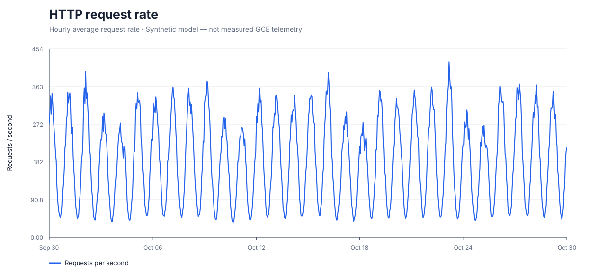
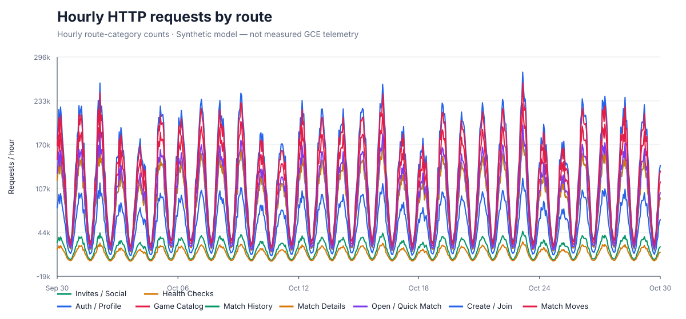
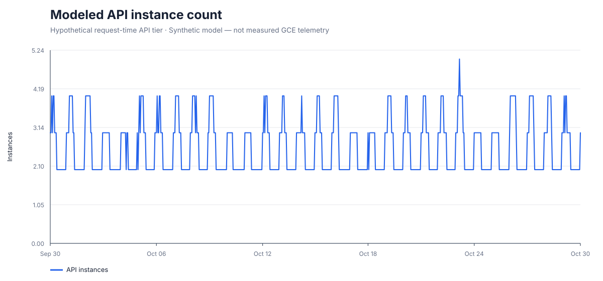
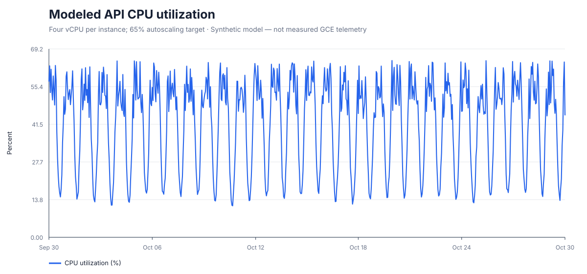
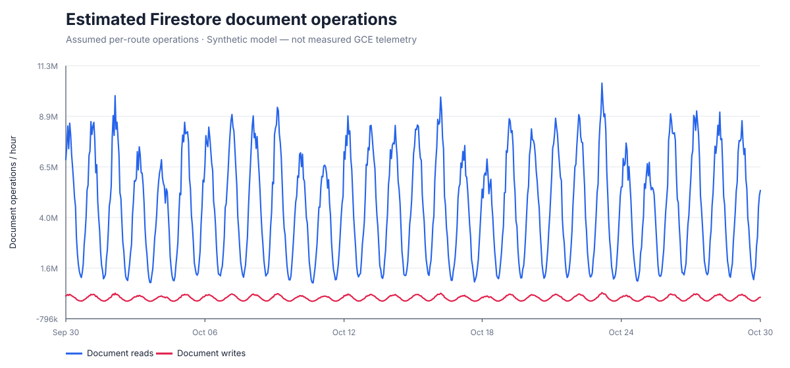
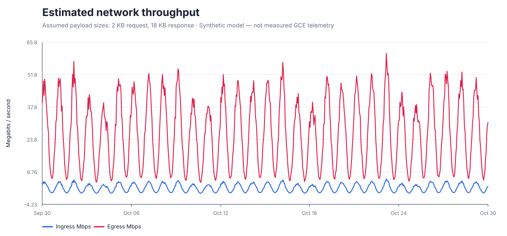
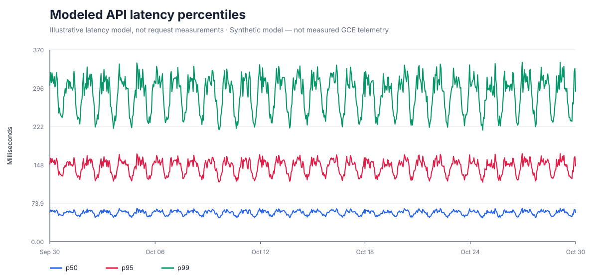

Synthetic monthly scaling scenario
Modeled data only. These charts are generated from assumptions for a 10M-user / 1B-match / 100K-game inventory. These are not measured GCE telemetry, a production trace, or an HTTP load-test result.






